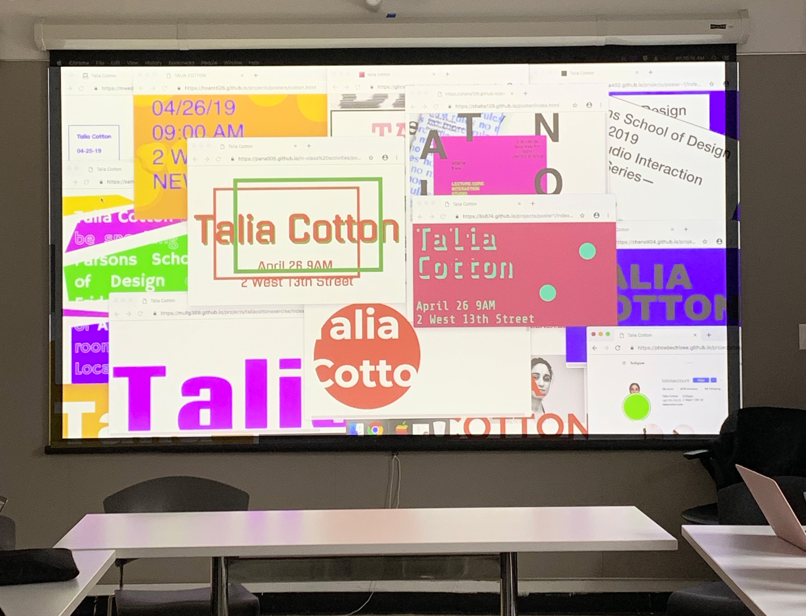

Nika Simovich Fisher
About
Teaching
Writing

Through my teaching, I love contextualizing internet history and helping my students think critically about their work and the world it exists in.
Shown above: Core Interaction students created posters for a guest lecturer and we assembled them into a mural.
Current Classes
Fall 2021
Art of the Web at The University of Pennsylvania
Core 1: Interaction
at Parsons School of Design
Previous
Spring 2021
Art of the Web
at The University of Pennsylvania
Core 2: Interaction
at Parsons School of Design
Fall 2020
Art of the Web
at The University of Pennsylvania
Core 1: Interaction
at Parsons School of Design
Spring 2020
Core: Interaction
at Parsons School of Design
What Did The 2010s Look Like?
a workshop at Parsons School of Design
Design 1b: Form and Meaning
at Rutgers University
Fall 2019
Web Advanced: Mobile Design
at Parsons School of Design
Design 3A: Design for the Digital Realm
at Rutgers University
Spring 2019
Core Interaction
at Parsons School of Design
Design 2B: Experimental Computing
at Rutgers University
Fall 2018
Web Advanced: Mobile Design
at Parsons School of Design
Spring 2018
Core Interaction
at Parsons School of Design
Fall 2017
Web Advanced: Mobile Design
at Parsons School of Design
Spring 2017
Core Interaction
at Parsons School of Design
{kind=link}